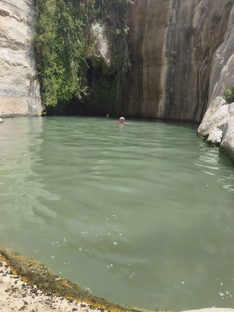

עין עקב ונחל צין
950 ש"ח לאדם 3 שעותסוד יופיו של המדבר, שהוא צופן אי-שם בחובו מקור מים חיים... (הנסיך הקטן)
יוצאים ממרחב שדה בוקר אל תוך בקעת צין, עד אחד המעיינות היפים בארץ שזורם מים חיים כל השנה. יורדים, טובלים אם בא לכם, ועולים לתצפית פתוחה על כל הבקעה.
לתיאום הטיול הזה בוואטסאפ